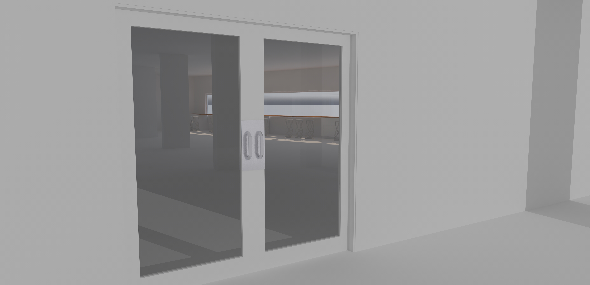
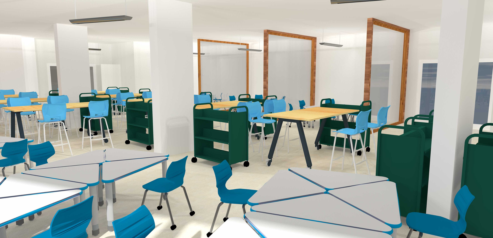
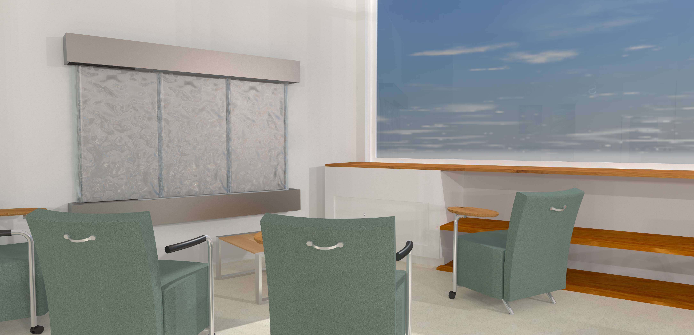
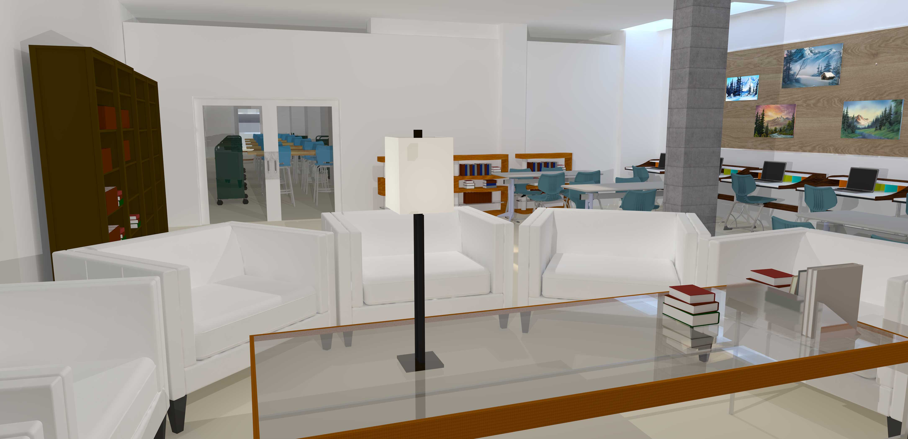

What does the library look like in the new century?
This project is in progress.
What do we need today?
What do people want in a library?
Ultimately, everyone wants something different. Some people want a silent cave with nothing but a candle for light, whereas some people want human contact, with loud voices and music and streams of daylight coming through the windows. The challenge of a designer is to reconcile these multi-faceted, conflicting demands into one harmonious design.


"Flexibility is key for the variety of student learning styles."
A wall-mounted water feature on the wall that is shared with the career center and near the windows would create a soft backdrop to bring down the energy level of the space as well as provide audial cover for quiet voices.

Expanded Space
In this space there would be tables and chairs with wheels for easy reorganization of this space, further expanded by the removing of all desktop computers from the library, which would also provide a final push towards the adoption of cloud technology.
Our design supports a variety of learning style; group and quiet work is supported by different rooms and furniture. Glass dividers create miniature conference areas, a quiet room provides a peaceful place to read, study, and relax, and small and big tables, benches, and counters allow one-on-one groups and larger groups to collaborate and study together.

Showcase Student Work
Showcasing student progress shouldn't be limited to report cards; it should be on the library walls to celebrate good work and inspire other students.